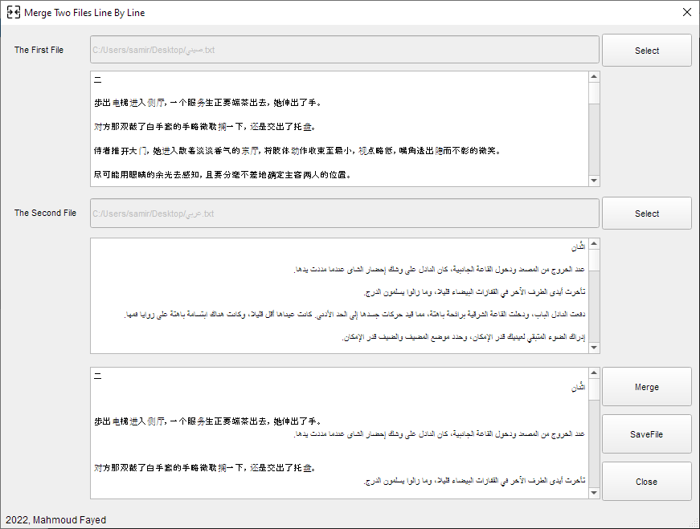
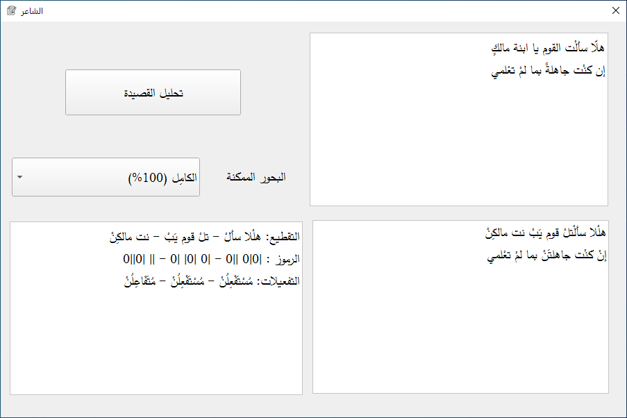
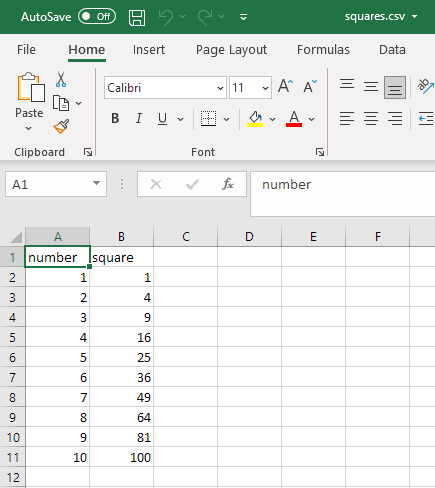

What is new in Ring 1.17¶
In this chapter we will learn about the changes and new features in Ring 1.17 release.
List of changes and new features¶
Ring 1.17 comes with the next features!
Merge Two Files
Poetry Analysis
Citations Prediction
TokensLib Library
CSVLib Library
JSONLib Library
HTTPLib Library
Better GUILib
Better Syntax Flexibility
Better I/O functions
Better Ring API
Better Code Generator for Extensions
More Improvements
Merge Two Files¶
An application to merge two text files line by line
Development Time: 30 minutes (Includes user interface design, coding, testing and distribution)
Poetry Analysis¶
An application to analysis the Arabic poetry
The application is over 4000 lines of Ring code
The source code is explained in a printed book about the subject
Citations Prediction¶
An applicaiton to predict the research paper citations using title, abstract or authors.
The applications uses Microsoft Azure Machine Learning for the Models
The Models are trained using a Dataset for a specific domain and specific journal
This application comes with 3 samples to see how it works!
It’s an example about using Ring, RingQt, RingLibCurl and JSONLib

TokensLib Library¶
Using this library we can get Ring tokens from source code files or strings.
Example:
load "tokenslib.ring"
func main
oTokens = new RingTokens {
fromFile("hello.ring")
PrintTokens()
? Copy("=",50)
fromString("? 1+1")
PrintTokens()
}
Output:
Keyword : SEE
Literal : Hello, World!
EndLine
==================================================
Operator : ? (23)
Number : 1
Operator : + (1)
Number : 1
EndLine
CSVLib Library¶
Using this library we can generate and read CSV files
Functions:
List2CSV(aList) --> cCSVString
CSV2List(cCSVString) --> aList
Example:
load "csvlib.ring"
aList = [ ["number", "square" ] ]
for t=1 to 10
aList + [ t, t*t ]
next
write( "squares.csv", list2CSV(aList) )
Output:
Example (2)
load "csvlib.ring"
if ! fexists("squares.csv")
? "The file squares.csv doesn't exist! - Run writeSquaresTable.ring to create it"
return
ok
aList = CSV2List( read("squares.csv") )
for subList in aList
? "" + subList[1] + " - " + subList[2]
next
Output:
number - square
1 - 1
2 - 4
3 - 9
4 - 16
5 - 25
6 - 36
7 - 49
8 - 64
9 - 81
10 - 100
JSONLib Library¶
Using this library we can generate and read JSON files
Functions:
List2JSON(aList) --> cJSONString
JSON2List(cJSONString) --> aList
Example (1):
File: sample.json
{
"firstName": "John",
"lastName": "Smith",
"age": 20,
"address": {
"streetAddress": "21 2nd Street",
"city": "New York",
"state": "NY",
"postalCode": "10021"
},
"phoneNumbers": [
{ "type": "home", "number": "212 555-1234" },
{ "type": "fax", "number": "646 555-4567" }
]
}
Ring Code:
load "jsonlib.ring"
func main
aList = JSON2List( read("sample.json") )
? aList[:FirstName]
? aList[:LastName]
? aList[:Age]
? aList[:Address][:city]
? aList[:phoneNumbers][1][:Type]
? aList[:phoneNumbers][1][:Number]
? aList[:phoneNumbers][2][:Type]
? aList[:phoneNumbers][2][:Number]
Output:
John
Smith
20
New York
home
212 555-1234
fax
646 555-4567
Example (2):
load "jsonlib.ring"
func main
aList = [
:name = "Ring",
:year = 2016
]
? List2JSON(aList)
Output:
{
"name": "Ring",
"year": 2016
}
JSONLib uses RingCJSON to read JSON files at high-performance
This RingCJSON extension support the CJSON library
CJSON URL: https://github.com/DaveGamble/cJSON
HTTPLib Library¶
This library provides support for HTTP based on cpp-httplib
URL: https://github.com/yhirose/cpp-httplib
Example:
load "httplib.ring"
oServer = new Server {
? "Try localhost:8080/hi"
route(:Get,"/hi",:mytest)
? "Listen to port 8080"
listen("0.0.0.0", 8080)
}
func mytest
oServer.setContent("Hello World!", "text/plain")
The other examples exist in this folder: ring/samples/UsingHTTPLib
See the (Using HTTPLib) chapter for more information.
Better GUILib¶
Many deprecated methods are removed from RingQt
Added: AddList() method to the TableWidget class
Tip
TableWidget class is a subclass of QTableWidget class
Note
To use TableWidget class, import system.gui after loading guilib.ring or lightguilib.ring
Example:
Source code: https://github.com/ring-lang/ring/tree/master/samples/UsingQt/TableWidget/AddRingList
class addRingListController from windowsControllerParent
oView = new addRingListView
aList = [["one","two"],
["three","four"],
["five","six"],
[7,8],
["I","Love","Ring","Programming"]]
oView.tablewidget1.addList(aList)
aList = [["Number","Square"]]
for t = 1 to 10
aList + [ t, t*t]
next
oView.tablewidget1.addList(aList)
Screen Shot:

Added: toList() method to the tableWidget class
Example:
aList = oView.tablewidget1.toList()
? aList
Added: AddList() method to the ListWidget class
Tip
ListWidget class is a subclass of QListWidget class
Note
To use ListWidget class, import system.gui after loading guilib.ring or lightguilib.ring
Example:
aList = [ 1:10, "one", "two", "three"]
oView.listWidget1.addList(aList)
Added: toList() method to the ListWidget class
Example:
aList = oView.listwidget1.toList()
? aList
Better Syntax Flexibility¶
The next keywords are added to the language
endif
endfor
endwhile
endswitch
endtry
function
endfunction
break
continue
Example:
for t=1 to 10
? t
if t=3
? :three
endif
endfor
Better I/O Functions¶
The next functions can be used without the need to load stdlib.ring
print(cString)
print2str(cString) -> cString
puts(cString)
getstring() -> cString
getnumber() -> nNumber
They are written in the C language to provide better performance
Example:
puts("Hello, World!")
puts(2022)
puts("one\ntwo\nthree")
puts("one\n\ttwo\n\t\tthree")
age = 6
puts("Ring is #{age} years old!")
puts("I know that 2+2=#{2+2} and 3+3=#{3+3}")
happy()
func happy
new myclass {x=10 y=20 z=30 test()}
? :done
class myclass
name = "Ring"
x y z
func test
puts("Language Name = #{name}")
puts("x=#{x}\ny=#{y}\nz=#{z}")
Output:
Hello, World!
2022
one
two
three
one
two
three
Ring is 6 years old!
I know that 2+2=4 and 3+3=6
Language Name = Ring
x=10
y=20
z=30
done
Better Ring API¶
The next functions are added to Ring API
RING_LIBINIT
RING_API_REGISTER(cFunctionName,pFunction)
RING_API_MALLOC(nSize)
RING_API_CALLOC(nItems,nItemSize)
RING_API_REALLOC(pPointer,nSize)
RING_API_FREE(pPointer)
RING_API_FREEFUNC
The next example demonstrates using RING_LIBINIT and RING_API_REGISTER
#include "ring.h"
#include "stdlib.h"
RING_FUNC(ring_myfunction)
{
printf("Hello, World!");
}
RING_LIBINIT
{
RING_API_REGISTER("myfunction",ring_myfunction);
}
Better Code Generator for Extensions¶
The code generator is updated to include the next features
Better output messages
Avoid generating the delete method twice
Using codegenlib.ring for common functions
Use casting in functions that destroy the structures
Clean error message when we can’t parse a line
Support C/C++ strings in structures
Example from RingHTTPLib extension
<struct>
MultipartFormData {string name,string content,string filename,string content_type}
</struct>
More Improvements¶
Ring Notepad (Web Browser) - Support URLs without “http” in the start
Form Designer - Default TextColor is Empty (Better when changing styles)
Form Designer - Generating Code - Form Height - Better Code
Many documents and samples are revised (Better English)
Documentation - Language Reference - Functions - Parameters & Output
Many applications are updated to use LightGUILib
Calendar application - Better code to detect the current year
JulianDayCalendar application - Better code to detect the current year
2048 Game - Added window icon
Added: samples/Drawing/Mandelbrot/Mandelbrot_Fast.ring
Added: samples/AQuickStart/MySQL/mysql10.ring
Added: samples/UsingQt/Process/processoutput.ring
Added: samples/UsingObjectsLib/test1.ring
Added: samples/UsingObjectsLib/test2.ring
Added: samples/UsingObjectsLib/test3.ring
StdLib - AppPath() function - Better Code
StdLib - New Function: IsAppCompiled()
StdLib - New Function: AppArguments()
StdLib - New Function: CheckEquality()
ObjectsLib - New Function: GetWindowByID()
RingOpenSSL - Enhancements to support all cipher algorithms
RingLibSDL - LibSDL version is updated from 2.0.14 to 2.0.20
RingAllegro - Allegro version is updated from 5.2.4 to 5.2.7.1
RingLibCurl - Better support for Ring2EXE
RingLibUI - The function uiFreeText() is removed from the library API
RingLibUI - Better implementation for functions that require uiFreeText()
RingWinAPI - Better Code
RingSockets - Better Code
RingQt - QString Class - Another version for the Replace() Method
RingQt - QLabel Class inherits the QFrame Class
RingQt - Added: QStyle class
RingQt - QApp Class - Added more methods
Ring Object File - ring_objfile_writeCfile() - Better Code
Eval() function - Return NULL if the Return command is not used
SetPointer()/GetPointer() functions - Better Code
Fexists() function - Support UTF-8 file names
GetFileSize() function - Get the file size without requiring any I/O
ringvm_codelist() function - Return the Byte Code of the current program
Ring VM - Better code when copying lists
Ring VM - ICO_JUMPZ Instruction - Treat empty lists as Zero
Ring VM - ICO_JUMPZ Instruction - Treat empty strings (NULL) as Zero
Ring VM - The result of using the Not (!) operator then List will be False
Ring VM - ring_vm_catch() function - Better Code
Ring VM - ring_vm_showerrormessage() function - Better Code
Ring VM - State Management - Better Code - ring_vm_newobjectstackpointer()
Ring VM - State management - Better Performance (when creating new objects)
Ring VM - Adding binary strings to the Stack - Better Code
Ring VM - ring_vm_loadindexaddress() function - Better Code
Ring VM - ring_vm_range() function - Better Code
Ring VM - ring_vm_string_assignment() function - Better Code
Ring VM - ring_vm_notequal() function - Better Code
Ring VM - ring_item_getnumber() - support different types (int/double)
Ring Compiler - Better Code - Using ring_general_addosfileseparator()
Ring Compiler - Better Code - Using ring_general_folderexistinfilename()
Ring Compiler - ring_scanner_checktoken() - Faster & Better Code
Ring Source Code - Better Format
Ring Source Code - Check out of memory at the Callee side instead of the Caller
Update: language/src/locatevc.bat - Support VS 2022